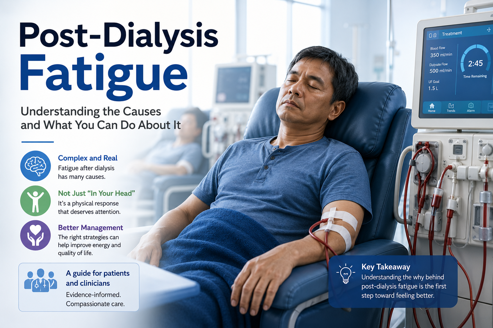
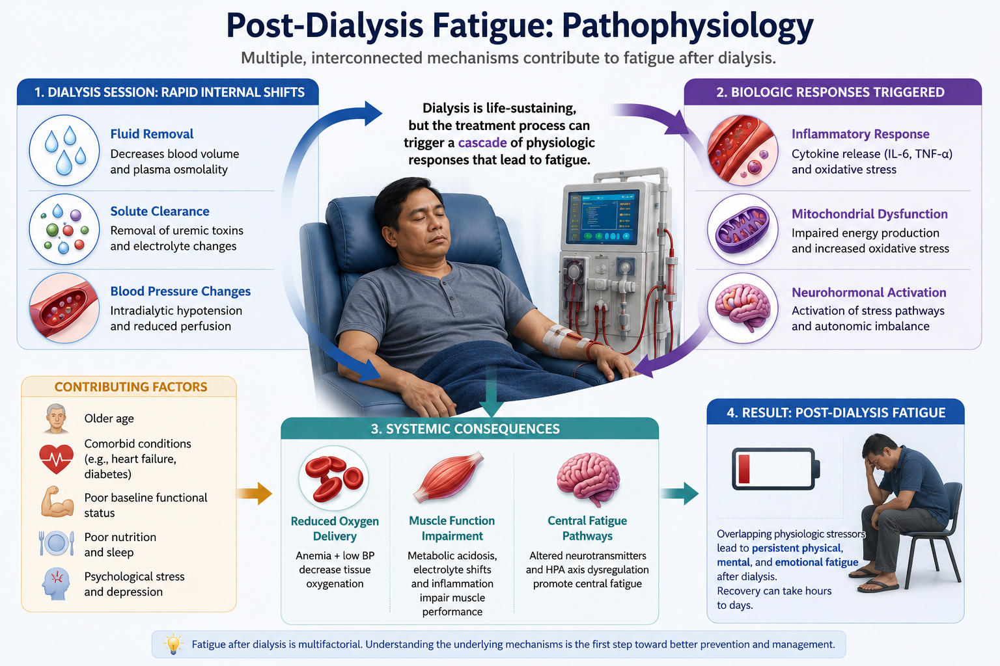
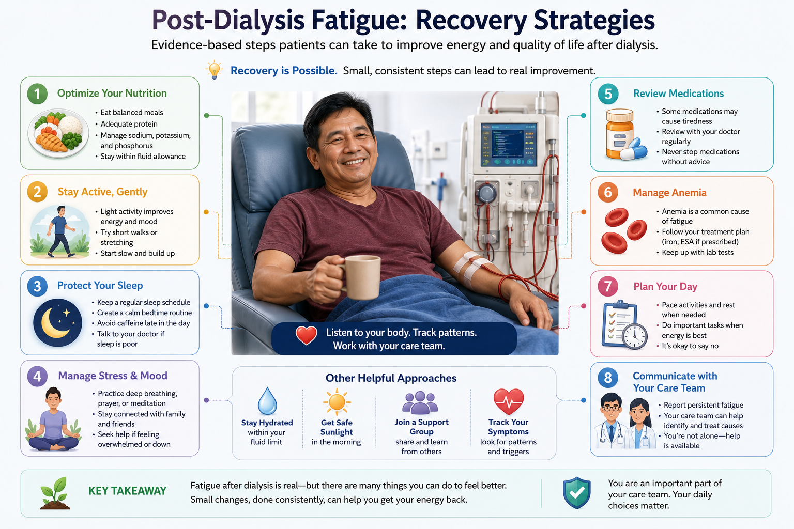
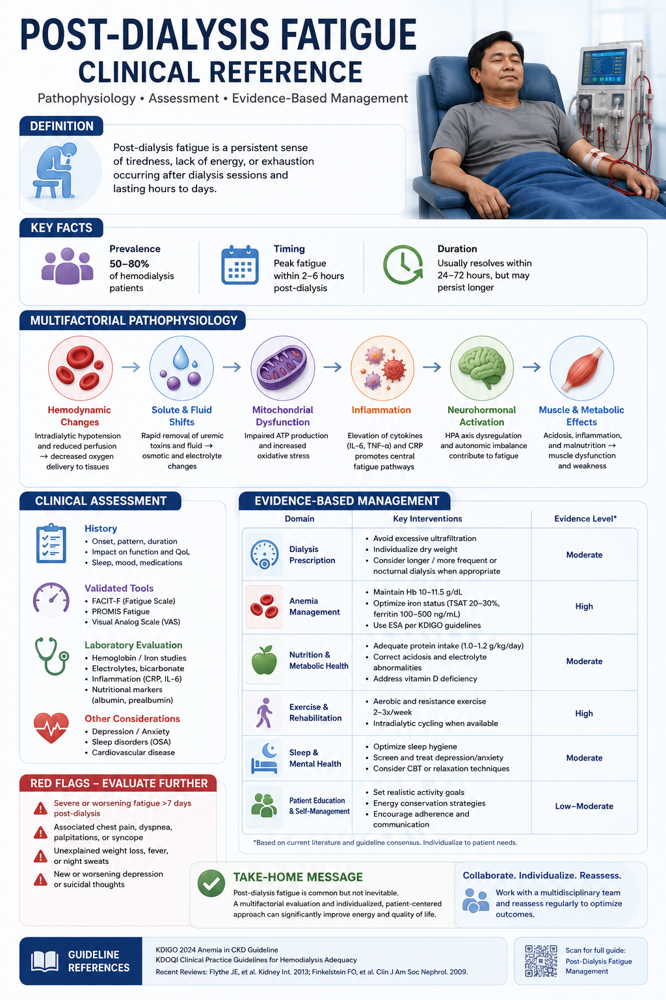

What is post-dialysis fatigue?Ano ang pagkapagod pagkatapos ng dialysis?Unsa ang kakapoy human sa dialysis?Nanu ing kapaguran kaibat ning dialysis?


Post-dialysis fatigue (PDF) is the overwhelming tiredness, weakness, and "washed-out" feeling that begins during or just after a hemodialysis session and can last anywhere from a few hours to the rest of the day. It is not laziness — it is a real physiologic response to what dialysis does to your body.Ang pagkapagod pagkatapos ng dialysis (post-dialysis fatigue o PDF) ay ang napakatinding pagod, panghihina, at pakiramdam na "wala nang lakas" na nagsisimula habang o kaagad pagkatapos ng isang sesyon ng hemodialysis at maaaring tumagal mula sa ilang oras hanggang sa buong maghapon. Hindi ito katamaran — isa itong tunay na tugon ng katawan sa ginagawa ng dialysis sa inyong katawan.Ang kakapoy human sa dialysis (post-dialysis fatigue o PDF) mao ang hilabihang kakapoy, kaluya, ug pamati nga "wala nay kusog" nga magsugod atol o pagkahuman dayon sa usa ka sesyon sa hemodialysis ug mahimong molungtad gikan sa pipila ka oras hangtod sa tibuok adlaw. Dili kini katapulan — usa kini ka tinuod nga tubag sa lawas sa gibuhat sa dialysis sa imong lawas.Ing kapaguran kaibat ning dialysis (post-dialysis fatigue o PDF) iya ing masakit a pamagal, kalunusan, at pamiramdam a "ala nang sikanan" a magumpisa kabang o kaibat mu ning metung a sesyon ning hemodialysis at malyaring tumagal manibat king pilang oras angga king mabilug a aldo. E ya katamaran — metung yang tune a tugun ning katawan king gagawan ning dialysis king kekang katawan.
Studies consistently report that 60 to 97% of hemodialysis patients experience significant fatigue after each session, making it one of the most common and most disabling symptoms in kidney failure. Filipino patients on three-times-weekly HD lose roughly 18 to 24 hours of functional time per week to post-dialysis recovery.Palaging ipinapakita ng mga pag-aaral na 60 hanggang 97% ng mga pasyenteng nagpapa-hemodialysis ang nakakaranas ng malubhang pagkapagod pagkatapos ng bawat sesyon, kaya isa ito sa pinakakaraniwan at pinakanakaaapektong sintomas sa pagpalya ng bato. Ang mga pasyenteng Pilipino na nagpapa-HD nang tatlong beses kada linggo ay nawawalan ng humigit-kumulang 18 hanggang 24 oras ng magamit na oras kada linggo dahil sa paggaling pagkatapos ng dialysis.Kanunay nga gitaho sa mga pagtuon nga 60 hangtod 97% sa mga pasyente sa hemodialysis ang makasinati og grabe nga kakapoy human sa matag sesyon, mao nga usa kini sa pinakakomon ug pinakamakadaot nga simtomas sa pagkapakyas sa kidney. Ang mga Pilipinong pasyente nga naga-HD og tulo ka beses matag semana mawad-an og mga 18 hangtod 24 ka oras nga magamit nga panahon matag semana tungod sa pagpaayo human sa dialysis.Pane pakit ning mga pamagsaliksik a 60 angga 97% ding pasyenteng magpa-hemodialysis ing makaramdam kapaguran a masakit kaibat ning balang sesyon, kaya metung ya king pekakaraniwan at pekamakaapektung sintomas king pamagpalya ning batu. Ding pasyenteng Kapampangan/Pilipinu a magpa-HD atlung beses kada dominggu ing mawawala lang mag 18 angga 24 oras a magagamit a panaun kada dominggu uli ning pamagaling kaibat ning dialysis.
The key insight: post-dialysis fatigue is not one problem — it is five problems happening at once. Each session triggers fluid shifts, toxin rebound, blood pressure stress, autonomic strain, and an inflammatory surge. Understanding which mechanism dominates for you is the first step toward targeting it.Ang mahalagang aral: ang pagkapagod pagkatapos ng dialysis ay hindi iisang problema — limang problema itong nangyayari nang sabay-sabay. Ang bawat sesyon ay nagdudulot ng paglipat ng likido, pagbalik ng lason, stress sa presyon ng dugo, pahirap sa awtonomikong sistema, at pagsalpok ng pamamaga. Ang pag-unawa kung aling mekanismo ang nangingibabaw sa inyo ang unang hakbang upang matugunan ito.Ang hinungdanong hibalo: ang kakapoy human sa dialysis dili usa lang ka problema — lima kini ka problema nga mahitabo nga dungan. Ang matag sesyon magpahinabo og pagbalhin sa likido, pagbalik sa hilo, stress sa presyon sa dugo, pag-antos sa autonomic nga sistema, ug pagsulbo sa panghubag. Ang pagsabot kon unsang mekanismo ang nagpatigbabaw kanimo mao ang unang lakang aron kini masulbad.Ing mahalagang aral: ing kapaguran kaibat ning dialysis e ya metung mung problema — limang problema yang mangyari a sabay-sabay. Ing balang sesyon ing magdala kapamilatan king paglipat ning danum, pamibalik ning lason, stress king presyon ning daya, pamagpahirap king awtonomikung sistema, at pamagsulbu ning pamanlati. Ing pamakaintindi nung nanung mekanismu ing pekamaragul kekayu ing mumunang dapat ban maatupan ya.
Why dialysis makes you so tired — 5 mechanisms.Bakit ka lubhang napapagod ng dialysis — 5 mekanismo.Nganong grabe ka nga gikapoy sa dialysis — 5 ka mekanismo.Bakit ka masyadung papaganan ning dialysis — 5 mekanismu.
Fluid Shift & Osmotic StressPaglipat ng Likido at Osmotikong StressPagbalhin sa Likido ug Osmotic nga StressPaglipat ning Danum at Osmotikung Stress
Rapid removal of 2–4 liters of fluid in 4 hours causes abrupt osmolality shifts. Cells — including brain cells — shrink and re-equilibrate. This osmotic stress is a major driver of the post-HD "crash."Ang mabilisang pag-alis ng 2–4 litro ng likido sa loob ng 4 na oras ay nagdudulot ng biglaang pagbabago sa osmolality. Ang mga selula — pati na ang mga selula ng utak — ay lumiliit at nagbabalanse muli. Ang osmotikong stress na ito ay isang pangunahing dahilan ng "pagbagsak" pagkatapos ng HD.Ang paspas nga pagkuha og 2–4 ka litro nga likido sulod sa 4 ka oras magpahinabo og kalit nga pagbag-o sa osmolality. Ang mga selula — apil ang mga selula sa utok — mokunhod ug mobalik og timbang. Kini nga osmotic nga stress usa ka nag-unang hinungdan sa "pagkahagsa" human sa HD.Ing masiglang pamiyalis ning 2–4 litru danum king lub ning 4 oras ing magdala kapamilatan king biglang pamagbayu king osmolality. Ding selula — pati na ding selula ning utak — ing lumiit at mibalanse lang pasibayu. Ing osmotikung stress a ini metung yang pekaragul a sanhi ning "pamibagsak" kaibat ning HD.
Uremic Toxin ReboundPagbalik ng Uremikong LasonPagbalik sa Uremic nga HiloPamibalik ning Uremikung Lason
Dialysis clears small-molecule toxins efficiently, but medium-molecule uremic toxins (indoxyl sulfate, p-cresol sulfate) are incompletely removed and rebound from tissue compartments within hours — re-exposing the brain and muscles.Mahusay na naaalis ng dialysis ang mga lasong maliit ang molekula, ngunit ang mga uremikong lasong may katamtamang molekula (indoxyl sulfate, p-cresol sulfate) ay hindi lubusang naaalis at bumabalik mula sa mga bahagi ng tisyu sa loob ng ilang oras — muling nabibilad ang utak at mga kalamnan.Maayo nga makuha sa dialysis ang mga hilo nga gagmay og molekula, apan ang mga uremic nga hilo nga tunga-tunga og molekula (indoxyl sulfate, p-cresol sulfate) dili hingpit nga makuha ug mobalik gikan sa mga bahin sa tisyu sulod sa pipila ka oras — mabutyag pag-usab ang utok ug mga kaunuran.Mayap yang milako ning dialysis ding lason a malating molekula, dapat ding uremikung lason a katamtaman ing molekula (indoxyl sulfate, p-cresol sulfate) ing e mabilug a milako at mibabalik la manibat king mga dake ning tisyu king lub ning pilang oras — mibalik lang malantad ing utak at ding laman.
Hemodynamic StressHemodinamikong StressHemodynamic nga StressHemodinamikung Stress
Intradialytic hypotension (IDH) — systolic BP drops during HD — reduces oxygen delivery to the brain and muscles. Even brief hypotensive episodes cause myocardial and cerebral "stunning" that outlasts the session by hours.Ang intradialytic hypotension (IDH) — pagbaba ng systolic na presyon ng dugo habang HD — ay binabawasan ang paghatid ng oksiheno sa utak at mga kalamnan. Kahit ang mga sandaling pagbaba ng presyon ay nagdudulot ng "stunning" ng puso at utak na tumatagal ng ilang oras pagkatapos ng sesyon.Ang intradialytic hypotension (IDH) — pagkunhod sa systolic nga presyon sa dugo atol sa HD — magpakunhod sa pagdala og oksiheno ngadto sa utok ug mga kaunuran. Bisan ang mubo nga pagkunhod sa presyon magpahinabo og "stunning" sa kasingkasing ug utok nga molungtad og pipila ka oras human sa sesyon.Ing intradialytic hypotension (IDH) — pamiyabak ning systolic a presyon ning daya kabang HD — ing magbawas king pamiyatad ning oksiheno king utak at ding laman. Maski ing malating pamiyabak ning presyon ing magdala kapamilatan king "stunning" ning pusu at utak a tumagal ya pilang oras kaibat ning sesyon.
Autonomic DysfunctionSira ng Awtonomikong SistemaKadaot sa Autonomic nga SistemaDepektu ning Awtonomikung Sistema
Chronic kidney disease impairs the autonomic nervous system. After HD, heart rate variability is reduced and the baroreflex response is blunted — making it harder for the body to restore normal blood pressure and tissue perfusion.Sinisira ng talamak na sakit sa bato ang awtonomikong sistema ng nerbiyo. Pagkatapos ng HD, bumababa ang pagbabago-bago ng tibok ng puso at nanghihina ang tugon ng baroreflex — kaya nahihirapan ang katawan na ibalik ang normal na presyon ng dugo at daloy ng dugo sa tisyu.Ang tibuok-panahon nga sakit sa kidney magdaot sa autonomic nga sistema sa nerbiyos. Human sa HD, mokunhod ang pagkalainlain sa pitik sa kasingkasing ug moluya ang tubag sa baroreflex — mao nga maglisod ang lawas sa pagbalik sa normal nga presyon sa dugo ug pag-agos sa dugo sa tisyu.Ing malwat nang sakit king batu ing magsira king awtonomikung sistema ning ugat. Kaibat ning HD, ing miyabak ing pamibayu-bayu ning pitik ning pusu at ing luya ing tugun ning baroreflex — kaya mahirap na king katawan ing pamibalik king normal a presyon ning daya at ing agus ning daya king tisyu.
Inflammatory SurgePagsalpok ng PamamagaPagsulbo sa PanghubagPamagsulbu ning Pamanlati
Contact of blood with the dialyzer membrane activates complement and releases pro-inflammatory cytokines (IL-1β, IL-6, TNF-α). This "mini-SIRS" response peaks 1–2 hours post-HD and mimics the fatigue of a low-grade infection.Ang pagdikit ng dugo sa lamad ng dialyzer ay pinapagana ang complement at naglalabas ng mga pro-inflammatory na cytokine (IL-1β, IL-6, TNF-α). Ang tugon na "mini-SIRS" na ito ay pinakamataas 1–2 oras pagkatapos ng HD at kagaya ng pagkapagod ng mahinang impeksyon.Ang pagsaghid sa dugo sa lamad sa dialyzer magpalihok sa complement ug magpagawas og mga pro-inflammatory nga cytokine (IL-1β, IL-6, TNF-α). Kini nga tubag nga "mini-SIRS" mokinang 1–2 ka oras human sa HD ug susama sa kakapoy sa hinay nga impeksyon.Ing pamidikit ning daya king lamad ning dialyzer ing magpagana king complement at magpalwal kareng pro-inflammatory a cytokine (IL-1β, IL-6, TNF-α). Ing tugun a "mini-SIRS" a ini ing pekamatas 1–2 oras kaibat ning HD at kalupa ning kapaguran ning malumang impeksyon.
Anemia amplifies all fivePinalalala ng anemya ang lahat ng limaAng anemya magpagrabe sa tanan nga limaIng anemya ing magpalala king anggang lima
A hemoglobin below 10 g/dL dramatically worsens every mechanism above — less oxygen-carrying capacity means less reserve for every insult. Correcting anemia with erythropoietin and IV iron is the highest-yield single intervention for PDF. Kidney Disease: Improving Global Outcomes (KDIGO) target: Hgb 10–11.5 g/dL.Ang hemoglobin na mababa sa 10 g/dL ay lubhang nagpapalala sa bawat mekanismo sa itaas — mas kaunting kapasidad na magdala ng oksiheno ay nangangahulugang mas kaunting reserba sa bawat pinsala. Ang pagtutuwid ng anemya gamit ang erythropoietin at IV na bakal ang pinakamabisang nag-iisang hakbang para sa PDF. Target ng Kidney Disease: Improving Global Outcomes (KDIGO): Hgb 10–11.5 g/dL.Ang hemoglobin nga ubos sa 10 g/dL grabe nga magpagrabe sa matag mekanismo sa ibabaw — mas gamay nga katakos sa pagdala og oksiheno nagpasabot og mas gamay nga reserba sa matag kadaot. Ang pagtul-id sa anemya pinaagi sa erythropoietin ug IV nga puthaw mao ang labing epektibo nga bugtong lakang alang sa PDF. Target sa Kidney Disease: Improving Global Outcomes (KDIGO): Hgb 10–11.5 g/dL.Ing hemoglobin a mababa king 10 g/dL ing masakit a magpalala king balang mekanismu king babo — mas kaunti a kakayanan a magdala oksiheno ing sinabi na mas kaunti a reserba king balang pinsala. Ing pamituid ning anemya kapamilatan ning erythropoietin at IV a bakal ing pekamabisang metung a dapat para king PDF. Target ning Kidney Disease: Improving Global Outcomes (KDIGO): Hgb 10–11.5 g/dL.
Rate your post-dialysis fatigue — the FSS.Sukatin ang inyong pagkapagod pagkatapos ng dialysis — ang FSS.Sukda ang imong kakapoy human sa dialysis — ang FSS.Sukatan me ing kekang kapaguran kaibat ning dialysis — ing FSS.
The Fatigue Severity Scale (FSS) is a validated 9-item questionnaire used in hemodialysis research worldwide. Rate each statement based on how you have felt during the past week, including after your dialysis sessions. A mean score of 4 or higher meets the clinical threshold for significant fatigue — worth bringing to your nephrologist.Ang Fatigue Severity Scale (FSS) ay isang napatunayang 9-aytem na talatanungan na ginagamit sa pananaliksik sa hemodialysis sa buong mundo. Sukatin ang bawat pahayag batay sa kung ano ang naramdaman ninyo sa nakaraang linggo, kasama na pagkatapos ng inyong mga sesyon ng dialysis. Ang karaniwang iskor na 4 o mas mataas ay umaabot sa klinikal na antas ng malubhang pagkapagod — dapat ipaalam sa inyong nephrologist.Ang Fatigue Severity Scale (FSS) usa ka napamatud-an nga 9-ka-butang nga pangutan-anon nga gigamit sa panukiduki sa hemodialysis sa tibuok kalibutan. Sukda ang matag pamahayag base sa unsay imong gibati sa milabay nga semana, apil ang human sa imong mga sesyon sa dialysis. Ang aberids nga iskor nga 4 o mas taas moabot sa klinikal nga lebel sa grabe nga kakapoy — angay ipahibalo sa imong nephrologist.Ing Fatigue Severity Scale (FSS) metung yang napatunayan a 9-aytem a talatanungan a gagamitan king pamanaliksik king hemodialysis king mabilug a yatu. Sukatan me ing balang pamagsabi base king nanu ing daramdaman mu king milabas a dominggu, pati na kaibat ding kekang sesyon ning dialysis. Ing karaniwan a iskor a 4 o mas matas ing miras king klinikal a antas ning masakit a kapaguran — dapat me pabalu king kekang nephrologist.
FSS developed by Krupp et al. (1989). Validated in hemodialysis populations. This tool is for educational self-assessment only — not a diagnostic instrument. Discuss your result with your nephrologist.
Medications & treatments for post-dialysis fatigue.Mga gamot at panggagamot para sa pagkapagod pagkatapos ng dialysis.Mga tambal ug pamaagi sa pagtambal alang sa kakapoy human sa dialysis.Deng gamut at panggamut para king kapaguran kaibat ning dialysis.
Management follows a four-tier approach: fix the fixable causes first, then optimize the dialysis prescription, then add lifestyle strategies, and finally consider targeted pharmacotherapy.Ang paggamot ay sumusunod sa apat na antas: ayusin muna ang mga sanhing kayang ayusin, pagkatapos ay pagbutihin ang reseta ng dialysis, pagkatapos ay magdagdag ng mga estratehiya sa pamumuhay, at panghuli ay isaalang-alang ang tumpak na panggamot sa pamamagitan ng gamot.Ang pagdumala mosunod sa upat ka lebel: ayoha una ang mga hinungdan nga mahimong ayohon, dayon pauswaga ang reseta sa dialysis, dayon dugangi og mga estratehiya sa pagpuyo, ug sa kataposan hunahunaa ang tukmang pagtambal pinaagi sa tambal.Ing panggamut ing tutuki king apat a antas: ayusan mumuna ding sanhi a kayang ayusan, kaibat pagmayapan ing reseta ning dialysis, kaibat dagdagan lang estratehiya king pamumuhay, at panuri isipan ing tumpak a panggamut kapamilatan ning gamut.
| TierAntasLebelAntas | ApproachParaanPamaagiParalan | Specific ActionsMga Tiyak na AksyonMga Espisipikong AksyonDeng Espesipikung Dapat | EvidenceEbidensyaEbidensyaEbidensya |
|---|---|---|---|
| Tier 1 Fix Root CausesAntas 1 Ayusin ang Pinag-uugatang SanhiLebel 1 Ayoha ang Gigikanang HinungdanAntas 1 Ayusan ing Pekaugatan a Sanhi |
Treat reversible contributorsGamutin ang mga nababawing dahilanTambali ang mga mabalik nga hinungdanGamutan ding mababawi a dahilan | Anemia: Target Hgb 10–11.5 g/dL with erythropoiesis-stimulating agent (ESA) + IV iron Electrolytes: Correct hypo-K, hypo-Mg, hyperphosphatemia Dialysis adequacy: Ensure Kt/V ≥ 1.4 Sleep: Screen and treat obstructive sleep apneaAnemya: Target Hgb 10–11.5 g/dL gamit ang erythropoiesis-stimulating agent (ESA) + IV na bakal Electrolytes: Itama ang mababang K, mababang Mg, mataas na phosphate Sapat na dialysis: Tiyaking Kt/V ≥ 1.4 Tulog: Suriin at gamutin ang obstructive sleep apneaAnemya: Target Hgb 10–11.5 g/dL gamit ang erythropoiesis-stimulating agent (ESA) + IV nga puthaw Electrolytes: Itul-id ang ubos nga K, ubos nga Mg, taas nga phosphate Igong dialysis: Siguroha nga Kt/V ≥ 1.4 Tulog: Susiha ug tambali ang obstructive sleep apneaAnemya: Target Hgb 10–11.5 g/dL kapamilatan ning erythropoiesis-stimulating agent (ESA) + IV a bakal Electrolytes: Ituid ing mababang K, mababang Mg, matas a phosphate Sukat a dialysis: Tiyakan ing Kt/V ≥ 1.4 Tudtud: Suriian at gamutan ing obstructive sleep apnea |
Strong (KDIGO 2012/2024)Malakas (KDIGO 2012/2024)Kusog (KDIGO 2012/2024)Masikan (KDIGO 2012/2024) |
| Tier 2 Dialysis RxAntas 2 Reseta ng DialysisLebel 2 Reseta sa DialysisAntas 2 Reseta ning Dialysis |
Optimize the session itselfPagbutihin ang mismong sesyonPauswaga ang sesyon mismoPagmayapan ing mismung sesyon | Cool dialysate: 35–36°C reduces IDH and post-HD fatigue Lower UF rate: ≤ 10 mL/kg/h reduces hemodynamic stress Longer sessions: 5–6 h thrice-weekly or incremental HD Hemodiafiltration (HDF): removes more medium-molecule toxinsMalamig na dialysate: 35–36°C binabawasan ang IDH at pagkapagod pagkatapos ng HD Mas mababang UF rate: ≤ 10 mL/kg/h binabawasan ang hemodinamikong stress Mas mahabang sesyon: 5–6 oras tatlong beses kada linggo o incremental HD Hemodiafiltration (HDF): nag-aalis ng mas maraming lasong katamtaman ang molekulaBugnaw nga dialysate: 35–36°C magpakunhod sa IDH ug kakapoy human sa HD Mas ubos nga UF rate: ≤ 10 mL/kg/h magpakunhod sa hemodynamic nga stress Mas taas nga sesyon: 5–6 ka oras tulo ka beses matag semana o incremental HD Hemodiafiltration (HDF): mokuha og mas daghang hilo nga tunga-tunga og molekulaMalamig a dialysate: 35–36°C ing magbawas king IDH at kapaguran kaibat ning HD Mas mababang UF rate: ≤ 10 mL/kg/h ing magbawas king hemodinamikung stress Mas makaba a sesyon: 5–6 oras atlung beses kada dominggu o incremental HD Hemodiafiltration (HDF): milako yang mas dakal a lason a katamtaman ing molekula |
Moderate (RCT evidence for cool dialysate; observational for HDF fatigue)Katamtaman (ebidensyang RCT para sa malamig na dialysate; obserbasyonal para sa pagkapagod sa HDF)Kasarangan (ebidensyang RCT alang sa bugnaw nga dialysate; obserbasyonal alang sa kakapoy sa HDF)Katamtaman (ebidensyang RCT para king malamig a dialysate; obserbasyonal para king kapaguran king HDF) |
| Tier 3 Non-PharmacologicAntas 3 Hindi Gumagamit ng GamotLebel 3 Dili Paggamit og TambalAntas 3 E Gagamit Gamut |
Behavioral & lifestyleUgali at pamumuhayBatasan ug pagpuyoUgali at pamumuhay | Intradialytic exercise: Pedaling during HD improves fatigue scores Post-HD rest protocol: 20–30 min planned rest, then light activity Nutritional support: Adequate protein (1.2 g/kg/d) + pre-HD snack Sleep hygiene: Consistent sleep schedule; avoid daytime naps > 30 minEhersisyo habang dialysis: Ang pagpepedal habang HD ay nagpapabuti ng iskor ng pagkapagod Protokol ng pahinga pagkatapos ng HD: 20–30 minutong nakaplanong pahinga, pagkatapos ay magaang gawain Suportang nutrisyon: Sapat na protina (1.2 g/kg/araw) + meryenda bago ang HD Kalinisan sa pagtulog: Palagiang oras ng tulog; iwasan ang idlip sa araw na > 30 minutoEhersisyo atol sa dialysis: Ang pagpedal atol sa HD magpauswag sa iskor sa kakapoy Protokol sa pagpahulay human sa HD: 20–30 ka minuto nga giplanong pahulay, dayon gaan nga kalihokan Suportang nutrisyon: Igong protina (1.2 g/kg/adlaw) + meryenda una sa HD Kahinlo sa pagtulog: Kanunayng iskedyul sa tulog; likayi ang katulog sa adlaw nga > 30 ka minutoEhersisyo kabang dialysis: Ing pamamedal kabang HD ing magpayap king iskor ning kapaguran Protokol ning pamipainawa kaibat ning HD: 20–30 minutu a plinanung painawa, kaibat magaan a dapat Suportang nutrisyon: Sukat a protina (1.2 g/kg/aldo) + meryenda bayu ning HD Kalinisan king pamitudtud: Pane a oras ning tudtud; itakwil ing idlip king aldo a > 30 minutu |
Moderate (systematic reviews of exercise; observational for nutrition)Katamtaman (sistematikong pagsusuri ng ehersisyo; obserbasyonal para sa nutrisyon)Kasarangan (sistematikong pagsusi sa ehersisyo; obserbasyonal alang sa nutrisyon)Katamtaman (sistematikung pamagsuri ning ehersisyo; obserbasyonal para king nutrisyon) |
| Tier 4 PharmacologicAntas 4 Gumagamit ng GamotLebel 4 Paggamit og TambalAntas 4 Gagamit Gamut |
Targeted drug therapyTumpak na panggamot sa gamotTukmang pagtambal sa tambalTumpak a panggamut king gamut | L-Carnitine 1 g IV post-HD: For confirmed carnitine deficiency; may reduce fatigue and muscle cramps Melatonin 3–5 mg qhs: For circadian disruption and sleep disorder SSRI: For comorbid depression (treat the depression, not the fatigue directly) Modafinil: Off-label; limited evidence; discuss with your nephrologistL-Carnitine 1 g IV pagkatapos ng HD: Para sa kumpirmadong kakulangan ng carnitine; maaaring bawasan ang pagkapagod at pulikat ng kalamnan Melatonin 3–5 mg tuwing gabi: Para sa gulo sa circadian at problema sa pagtulog SSRI: Para sa kaakibat na depresyon (gamutin ang depresyon, hindi diretso ang pagkapagod) Modafinil: Off-label; limitadong ebidensya; talakayin sa inyong nephrologistL-Carnitine 1 g IV human sa HD: Alang sa kumpirmadong kakulang sa carnitine; mahimong makunhod ang kakapoy ug kombulsyon sa kaunuran Melatonin 3–5 mg matag gabii: Alang sa kasamok sa circadian ug sakit sa pagtulog SSRI: Alang sa kauban nga depresyon (tambali ang depresyon, dili direkta ang kakapoy) Modafinil: Off-label; limitadong ebidensya; hisguti sa imong nephrologistL-Carnitine 1 g IV kaibat ning HD: Para king kumpirmadung kakulangan ning carnitine; malyaring bawasan ing kapaguran at pulikat ning laman Melatonin 3–5 mg balang bengi: Para king gulu king circadian at problema king pamitudtud SSRI: Para king kayabe a depresyon (gamutan ing depresyon, e diretsu ing kapaguran) Modafinil: Off-label; limitadung ebidensya; pisabian me king kekang nephrologist |
Weak–Moderate (carnitine: mixed RCTs; melatonin: small trials)Mahina–Katamtaman (carnitine: magkakahalong RCT; melatonin: maliliit na pagsubok)Huyang–Kasarangan (carnitine: nagkasagol nga RCT; melatonin: gagmayng pagsulay)Maluya–Katamtaman (carnitine: mesalu-salung RCT; melatonin: malating pamagsubuk) |
Never start or stop medications without your nephrologistHuwag magsimula o magtigil ng gamot nang wala ang inyong nephrologistAyaw pagsugod o paghunong og tambal nga wala ang imong nephrologistE ka mag-umpisa o mag-untat gamut nung ala ing kekang nephrologist
L-carnitine, sleep aids, and antidepressants all require dose adjustment in kidney failure. Some over-the-counter supplements marketed for "energy" contain herbs that are nephrotoxic or interact with dialysis.Ang L-carnitine, mga pampatulog, at antidepressant ay pawang nangangailangan ng pagbabago sa dosis sa pagpalya ng bato. May ilang suplemento na binibenta nang walang reseta para sa "enerhiya" na naglalaman ng mga halamang nakakalason sa bato o nakikialam sa dialysis.Ang L-carnitine, mga pampakatulog, ug antidepressant tanan nagkinahanglan og pag-usab sa dosis sa pagkapakyas sa kidney. Adunay pipila ka suplemento nga gibaligya nga walay reseta alang sa "enerhiya" nga adunay mga tanom nga makahilo sa kidney o makasagbat sa dialysis.Ing L-carnitine, deng pampatudtud, at antidepressant ing anggang mangailangan pamagbayu king dosis king pamagpalya ning batu. Ating pilang suplementu a pisali nung ala reseta para king "enerhiya" a atin dutung a makalason king batu o makialam king dialysis.
Common questions about dialysis fatigue.Mga karaniwang tanong tungkol sa pagkapagod sa dialysis.Mga komon nga pangutana bahin sa kakapoy sa dialysis.Deng karaniwan a kutang tungkul king kapaguran king dialysis.
7 strategies to recover faster after dialysis.7 estratehiya upang gumaling nang mas mabilis pagkatapos ng dialysis.7 ka estratehiya aron mas paspas nga maulian human sa dialysis.7 estratehiya ban gumaling nang mas masigla kaibat ning dialysis.

1. Smart pre-HD hydration1. Matalinong hidrasyon bago ang HD1. Maalamong hydration una sa HD1. Matalinung hidrasyon bayu ning HD
Arrive at dialysis with your weight as close to dry weight as possible. A large fluid load means more aggressive ultrafiltration, more hemodynamic stress, and worse fatigue.Dumating sa dialysis na ang inyong timbang ay pinakamalapit sa dry weight hangga't maaari. Ang malaking dami ng likido ay nangangahulugang mas agresibong ultrafiltration, mas maraming hemodinamikong stress, at mas malalang pagkapagod.Pag-abot sa dialysis nga ang imong timbang mao ang labing duol sa dry weight kutob sa mahimo. Ang dako nga gidaghanon sa likido nagpasabot og mas agresibong ultrafiltration, mas daghang hemodynamic nga stress, ug mas grabeng kakapoy.Datang ka king dialysis a ing kekang timbang iya ing pekamalapit king dry weight hanggang kaya. Ing maragul a dami ning danum ing sinabi na mas agresibung ultrafiltration, mas dakal a hemodinamikung stress, at mas malalang kapaguran.
2. Planned post-HD rest2. Nakaplanong pahinga pagkatapos ng HD2. Giplanong pahulay human sa HD2. Plinanung painawa kaibat ning HD
Give yourself a 20–30 minute rest period immediately after returning home. Lie down, close your eyes. Do not push through. This brief recovery window helps your blood pressure and autonomic system stabilize.Bigyan ang sarili ng 20–30 minutong pahinga kaagad pagkauwi. Humiga, ipikit ang mga mata. Huwag pilitin. Ang maikling panahong ito ng paggaling ay tumutulong na mag-stabilize ang inyong presyon ng dugo at awtonomikong sistema.Hatagi ang imong kaugalingon og 20–30 ka minuto nga pahulay dayon human makauli. Higda, piyunga ang imong mata. Ayaw pugsa. Kini nga mubo nga panahon sa pagpaayo motabang nga mo-stabilize ang imong presyon sa dugo ug autonomic nga sistema.Dinan me ing sarili mu 20–30 minutu a painawa kaagad kaibat na kang muli. Migeh ka, ipikit mo ding kekang mata. E me pipilitan. Ing makuyad a panaun a ini ning pamagaling ing sasaup ban mag-stabilize ing kekang presyon ning daya at awtonomikung sistema.
3. Gentle movement after rest3. Marahang paggalaw pagkatapos ng pahinga3. Hinay nga paglihok human sa pahulay3. Marahan a pamagkimut kaibat ning painawa
Once the initial crash passes (2–4 hours post-HD), a short slow walk of 10–15 minutes improves circulation and speeds recovery better than staying in bed all day.Kapag lumipas na ang unang pagbagsak (2–4 oras pagkatapos ng HD), ang maikling mabagal na lakad na 10–15 minuto ay nagpapabuti ng sirkulasyon at nagpapabilis ng paggaling nang mas mabuti kaysa manatili sa kama buong araw.Kon molabay na ang unang pagkahagsa (2–4 ka oras human sa HD), ang mubo nga hinay nga lakaw og 10–15 ka minuto magpauswag sa sirkulasyon ug magpapaspas sa pagpaayo nga mas maayo kaysa maghigda sa katre tibuok adlaw.Nung milabas ne ing mumunang pamibagsak (2–4 oras kaibat ning HD), ing makuyad a marahan a lakad a 10–15 minutu ing magpayap king sirkulasyon at magpasiglang king pamagaling a mas mayap kesa manatili king pandan mabilug a aldo.
4. Cool down after dialysis4. Magpalamig pagkatapos ng dialysis4. Pagpabugnaw human sa dialysis4. Magpalamig kaibat ning dialysis
Your core temperature rises slightly during HD. A cool environment, a fan, or a lukewarm shower post-HD helps your body thermoregulate and reduces the inflammatory fatigue signal.Bahagyang tumataas ang temperatura ng inyong katawan habang HD. Ang malamig na kapaligiran, isang bentilador, o maligamgam na paliligo pagkatapos ng HD ay tumutulong sa katawan na mag-thermoregulate at binabawasan ang senyas ng pamamaga na pagkapagod.Gamayng motaas ang temperatura sa imong lawas atol sa HD. Ang bugnaw nga palibot, usa ka bentilador, o maligamgam nga paligo human sa HD motabang sa lawas nga mo-thermoregulate ug magpakunhod sa senyales sa panghubag nga kakapoy.Kaunti yang tutas ing temperatura ning kekang katawan kabang HD. Ing malamig a paligid, metung a bentilador, o maligamgam a pamaligu kaibat ning HD ing sasaup king katawan a mag-thermoregulate at magbawas king senyas ning pamanlati a kapaguran.
5. Time your nutrition5. I-tiyempo ang inyong nutrisyon5. I-tiyempo ang imong nutrisyon5. Tiyempuan me ing kekang nutrisyon
Eat a small kidney-friendly snack 1 hour before dialysis. Have a proper meal 1–2 hours after HD — your body is in a catabolic state and needs protein for muscle repair.Kumain ng maliit na meryendang mabuti sa bato 1 oras bago ang dialysis. Kumain ng maayos na pagkain 1–2 oras pagkatapos ng HD — ang inyong katawan ay nasa catabolic na kalagayan at nangangailangan ng protina para sa pagkukumpuni ng kalamnan.Kaon og gamayng meryenda nga maayo sa kidney 1 ka oras una sa dialysis. Kaon og hustong pagkaon 1–2 ka oras human sa HD — ang imong lawas anaa sa catabolic nga kahimtang ug nagkinahanglan og protina alang sa pag-ayo sa kaunuran.Mangan kang malating meryendang mayap king batu 1 oras bayu ning dialysis. Mangan kang mayap a pamangan 1–2 oras kaibat ning HD — ing kekang katawan atyu ya king catabolic a kalagayan at mangailangan yang protina para king pamagkumpuni ning laman.
6. Protect your sleep schedule6. Protektahan ang inyong oras ng tulog6. Panalipdi ang imong iskedyul sa tulog6. Ingatan me ing kekang oras ning tudtud
Sleep disturbance is near-universal in dialysis patients and amplifies daytime fatigue. Go to bed and wake at the same time every day. Avoid screens for 30 minutes before bed.Ang gulo sa pagtulog ay halos pangkalahatan sa mga pasyente sa dialysis at nagpapalala ng pagkapagod sa maghapon. Matulog at gumising sa parehong oras araw-araw. Iwasan ang mga screen 30 minuto bago matulog.Ang kasamok sa pagtulog halos naa sa tanang pasyente sa dialysis ug magpagrabe sa kakapoy sa adlaw. Matulog ug momata sa samang oras matag adlaw. Likayi ang mga screen 30 ka minuto una matulog.Ing gulu king pamitudtud ing malapit-kabuuan kareng pasyente king dialysis at magpalala king kapaguran king aldo. Matudtud at mimata king kalupang oras balang aldo. Itakwil la ding screen 30 minutu bayu matudtud.
7. Emotional support7. Suportang emosyonal7. Suportang emosyonal7. Suportang emosyonal
Depression and fatigue are strongly intertwined in dialysis patients. Peer support groups, family involvement, and — when needed — professional mental health support all independently reduce fatigue burden.Ang depresyon at pagkapagod ay matibay na magkaugnay sa mga pasyente sa dialysis. Ang mga grupong sumusuporta ng kapwa, pakikialam ng pamilya, at — kung kailangan — propesyonal na suporta sa kalusugan ng isip ay bawat isang nagbabawas ng pasanin ng pagkapagod.Ang depresyon ug kakapoy kusganong nagkalambigit sa mga pasyente sa dialysis. Ang mga grupo sa pagsuporta sa isigkatawo, pag-apil sa pamilya, ug — kon gikinahanglan — propesyonal nga suporta sa panghunahuna nga panglawas ang matag usa magpakunhod sa palas-anon sa kakapoy.Ing depresyon at kapaguran ing masikan a mekakabit kareng pasyente king dialysis. Ding grupung susuporta king kapwa, pamiyabe ning pamilya, at — nung kailangan — propesyonal a suporta king kalusugan ning isip ing balang metung magbawas king pasan ning kapaguran.
Warning signs that are not normal fatigue.Mga babalang senyales na hindi normal na pagkapagod.Mga pasidaan nga timailhan nga dili normal nga kakapoy.Deng senyas a babala a e normal a kapaguran.
The following symptoms during or after dialysis are medical emergencies — do not wait until your next session.Ang mga sumusunod na sintomas habang o pagkatapos ng dialysis ay mga emerhensiyang medikal — huwag maghintay hanggang sa susunod na sesyon.Ang mosunod nga mga simtomas atol o human sa dialysis mga emerhensiyang medikal — ayaw paghulat hangtod sa sunod nga sesyon.Ding tutuking sintomas kabang o kaibat ning dialysis ing deng emerhensiyang medikal — e ka manaya angga king tutuking sesyon.
⚠️ Seek emergency care immediately if you have:⚠️ Humingi ng emerhensiyang pangangalaga agad kung mayroon kayo ng:⚠️ Pangita og emerhensiyang pag-atiman dayon kon aduna kay:⚠️ Manyad kang emerhensiyang pamaalaga agad nung atin kang:
Call your dialysis center if fatigue is suddenly much worse than usualTawagan ang inyong dialysis center kung biglang mas malala ang pagkapagod kaysa datiTawagi ang imong dialysis center kon kalit nga mas grabe ang kakapoy kaysa naandanAusan me ing kekang dialysis center nung biglang mas malala ing kapaguran kesa dati
A sudden increase in post-HD fatigue — especially with dizziness or muscle cramps — can signal worsening anemia, an access problem, under-dialysis, or electrolyte imbalance. Your dialysis team can check your blood on your next session or arrange an urgent visit.Ang biglaang pagdami ng pagkapagod pagkatapos ng HD — lalo na kung may pagkahilo o pulikat ng kalamnan — ay maaaring senyales ng lumalalang anemya, problema sa access, kulang na dialysis, o kawalan ng balanse ng electrolyte. Masusuri ng inyong dialysis team ang inyong dugo sa susunod na sesyon o mag-aayos ng agarang pagbisita.Ang kalit nga pagdugang sa kakapoy human sa HD — labi na kon adunay kalipong o kombulsyon sa kaunuran — mahimong timailhan sa nagkagrabeng anemya, problema sa access, kulang nga dialysis, o kawalay balanse sa electrolyte. Masusi sa imong dialysis team ang imong dugo sa sunod nga sesyon o mag-areglo og dinaliang pagbisita.Ing biglang pamidagdag ning kapaguran kaibat ning HD — lalu na nung atin kalilingu o pulikat ning laman — ing malyaring senyas ning lumalalang anemya, problema king access, kulang a dialysis, o alang balanse king electrolyte. Masuri ne ning kekang dialysis team ing kekang daya king tutuking sesyon o mag-ayus lang agad a pamibisita.
What your team should check — and how often.Ano ang dapat suriin ng inyong team — at gaano kadalas.Unsa ang angay susihon sa imong team — ug unsa ka subsob.Nanu ing dapat suriian ning kekang team — at makananu kadalas.
These lab values are most closely linked to post-dialysis fatigue. Review them with your nephrologist at each visit.Ang mga halaga ng laboratoryong ito ay pinakamalapit na nakaugnay sa pagkapagod pagkatapos ng dialysis. Suriin ang mga ito kasama ang inyong nephrologist sa bawat pagbisita.Kining mga bili sa laboratoryo mao ang labing suod nga nalambigit sa kakapoy human sa dialysis. Susiha kini uban sa imong nephrologist sa matag pagbisita.Deng halaga ning laboratoryu a deni iya ing pekamalapit a mekakabit king kapaguran kaibat ning dialysis. Suriian la deni kayabe ning kekang nephrologist king balang pamibisita.
| ParameterParameterParameterParameter | Target (HD patient)Target (pasyente sa HD)Target (pasyente sa HD)Target (pasyente king HD) | FrequencyDalasKasubsobKadalas | Why It Matters for FatigueBakit Mahalaga Ito sa PagkapagodNganong Importante Kini sa KakapoyBakit Mahalaga Ya king Kapaguran |
|---|---|---|---|
| Hemoglobin | 10.0–11.5 g/dL | MonthlyBuwan-buwanBinulanBulan-bulan | Low Hgb is the single strongest modifiable fatigue driverAng mababang Hgb ang pinakamalakas na maaayos na sanhi ng pagkapagodAng ubos nga Hgb mao ang pinakakusgang maayohan nga hinungdan sa kakapoyIng mababang Hgb iya ing pekamasikan a maayus a sanhi ning kapaguran |
| Kt/V (dialysis dose) | ≥ 1.4 (single-pool) | MonthlyBuwan-buwanBinulanBulan-bulan | Under-dialysis → toxin accumulation → worsened fatigueKulang na dialysis → pag-ipon ng lason → lumalalang pagkapagodKulang nga dialysis → pagtapok sa hilo → nagkagrabeng kakapoyKulang a dialysis → pamitipun ning lason → lumalalang kapaguran |
| Serum albumin | ≥ 3.5 g/dL | MonthlyBuwan-buwanBinulanBulan-bulan | Malnutrition amplifies fatigue and impairs recoveryPinalalala ng malnutrisyon ang pagkapagod at humahadlang sa paggalingAng malnutrisyon magpagrabe sa kakapoy ug makababag sa pagpaayoIng malnutrisyon ing magpalala king kapaguran at magsagka king pamagaling |
| Serum potassium | 3.5–5.5 mEq/L | MonthlyBuwan-buwanBinulanBulan-bulan | Dyskalemia causes muscle weakness and cardiac instabilityAng dyskalemia ay nagdudulot ng panghihina ng kalamnan at kawalang-tatag ng pusoAng dyskalemia magpahinabo og kaluya sa kaunuran ug kawalay-lig-on sa kasingkasingIng dyskalemia ing magdala kapamilatan king kalunusan ning laman at alang-tatag ning pusu |
| Serum phosphate | 3.5–5.5 mg/dL | MonthlyBuwan-buwanBinulanBulan-bulan | Hyperphosphatemia indicates uremic burden and CKD-MBDAng hyperphosphatemia ay tanda ng uremikong pasanin at CKD-MBDAng hyperphosphatemia timailhan sa uremic nga palas-anon ug CKD-MBDIng hyperphosphatemia iya ing tanda ning uremikung pasan at CKD-MBD |
| Ferritin / transferrin saturation (TSAT) | Ferritin 200–500 ng/mL; TSAT ≥ 20% | Every 3 monthsBawat 3 buwanMatag 3 ka bulanBalang 3 bulan | Iron deficiency limits ESA response and worsens anemia-fatigueAng kakulangan sa bakal ay nililimitahan ang tugon sa ESA at pinalalala ang pagkapagod dulot ng anemyaAng kakulang sa puthaw magpugong sa tubag sa ESA ug magpagrabe sa kakapoy tungod sa anemyaIng kakulangan king bakal ing maglimita king tugun king ESA at magpalala king kapaguran dulut ning anemya |
| Pre-HD weight / UF rate | UF rate ≤ 10 mL/kg/h | Each sessionBawat sesyonMatag sesyonBalang sesyon | High UF rates → IDH → hemodynamic stunning → severe post-HD fatigueMataas na UF rate → IDH → hemodinamikong stunning → matinding pagkapagod pagkatapos ng HDTaas nga UF rate → IDH → hemodynamic nga stunning → grabeng kakapoy human sa HDMatas a UF rate → IDH → hemodinamikung stunning → masakit a kapaguran kaibat ning HD |
Questions to bring to your next nephrology visitMga tanong na dalhin sa inyong susunod na pagbisita sa nephrologyMga pangutana nga dad-on sa imong sunod nga pagbisita sa nephrologyDeng kutang a dalan king kekang tutuking pamibisita king nephrology
- What is my latest hemoglobin and what is the plan to reach 10–11.5 g/dL?Ano ang aking pinakahuling hemoglobin at ano ang plano upang maabot ang 10–11.5 g/dL?Unsa ang akong pinakabag-ong hemoglobin ug unsa ang plano aron maabot ang 10–11.5 g/dL?Nanu ing kakung pekatauling hemoglobin at nanu ing plano ban miras ing 10–11.5 g/dL?
- What is my Kt/V and is my dialysis prescription adequate?Ano ang aking Kt/V at sapat ba ang aking reseta ng dialysis?Unsa ang akong Kt/V ug igo ba ang akong reseta sa dialysis?Nanu ing kakung Kt/V at sukat ya ba ing kakung reseta ning dialysis?
- Am I a candidate for cool dialysate (35–36°C) to reduce intradialytic hypotension?Kandidato ba ako para sa malamig na dialysate (35–36°C) upang bawasan ang intradialytic hypotension?Kandidato ba ko alang sa bugnaw nga dialysate (35–36°C) aron makunhod ang intradialytic hypotension?Kandidatu ku ba para king malamig a dialysate (35–36°C) ban bawasan ing intradialytic hypotension?
- Should I be screened for sleep apnea?Dapat ba akong suriin para sa sleep apnea?Angay ba kong susihon alang sa sleep apnea?Dapat ku ba suriian para king sleep apnea?
- Is intradialytic cycling available at my center?Available ba ang intradialytic cycling sa aking center?Available ba ang intradialytic cycling sa akong center?Available ya ba ing intradialytic cycling king kakung center?
- Do I have carnitine deficiency, and would supplementation help me?Mayroon ba akong kakulangan sa carnitine, at makakatulong ba sa akin ang suplemento?Aduna ba koy kakulang sa carnitine, ug makatabang ba kanako ang suplemento?Atin ku ba kakulangan king carnitine, at makasaup ya ba kaku ing suplementu?
Pathophysiology of Post-Dialysis Fatigue
A multifactorial syndrome driven by hemodynamic, osmotic, neuro-humoral, and inflammatory perturbations — each addressable with targeted prescription changes.

Hemodynamic mechanisms
Intradialytic hypotension (IDH), defined as a ≥ 20 mmHg fall in systolic BP or a nadir systolic < 90 mmHg, occurs in 20–30% of HD sessions. IDH triggers compensatory vasoconstriction that reduces splanchnic, residual renal, and cerebral perfusion. Myocardial stunning — transient segmental wall motion abnormalities detectable on echocardiography — occurs in ~35% of HD sessions and correlates directly with post-HD fatigue severity. Cumulative stunning drives progressive cardiac fibrosis and is the likely bridge between acute post-HD fatigue and long-term cardiac mortality.
Ultrafiltration rate (UFR) is the dominant modifiable driver of IDH. Every 1 mL/kg/h increase in UFR above 10 mL/kg/h is independently associated with a 40% increase in post-HD fatigue score (NRS) in observational data. Cooling the dialysate to 35–36°C increases vascular tone and reduces IDH frequency by ~25–35% in RCT evidence.
Fluid and osmolality dynamics
Rapid removal of extracellular volume creates transient hyperosmolality as plasma osmolality falls faster than the intracellular compartment can adapt. The resulting brain cell swelling (opposing the osmolality gradient) is a recognized driver of dialysis disequilibrium syndrome and its milder chronic variant — post-HD cognitive dulling and fatigue. Patients with high pre-HD BUN (> 80 mg/dL) or large interdialytic weight gains (IDWG > 5% dry weight) are at highest risk.
Uremic toxin accumulation and rebound
Small water-soluble molecules (urea, creatinine) are efficiently removed by conventional HD. Protein-bound middle molecules — indoxyl sulfate (IS), p-cresol sulfate (pCS), and β₂-microglobulin — are incompletely cleared. IS and pCS exert direct mitochondrial toxicity in skeletal muscle, blunting ATP generation and contributing to physical fatigue. Both molecules rebound from the tissue compartment within 2–4 hours post-HD, re-exposing patients to toxin load before the next session. Hemodiafiltration (HDF) with high-volume substitution (> 23 L/session) removes significantly more middle molecules and is associated with lower reported fatigue in the ESHOL and CONTRAST trials.
Neuroinflammation and cytokine release
Blood-membrane contact activates the complement cascade (C3a, C5a) and stimulates monocyte secretion of IL-1β, IL-6, and TNF-α. Peak cytokine levels occur 1–2 hours post-HD and are highest with low-flux membranes and older cellulose-based materials. Modern high-flux polysulfone membranes reduce but do not eliminate this response. TNF-α directly suppresses hypothalamic orexin signaling — the same pathway implicated in narcolepsy — producing the sickness-behavior fatigue phenotype seen post-HD.
Autonomic dysfunction
Uremia impairs both sympathetic and parasympathetic arms of the autonomic nervous system. Reduced heart rate variability (HRV), impaired baroreflex sensitivity, and exaggerated orthostatic hypotension post-HD create a prolonged recovery window. Interventions that improve autonomic tone — regular moderate exercise, adequate sleep, and appropriate renin–angiotensin–aldosterone system (RAAS) blockade — correlate with improved post-HD fatigue scores.
Systematic workup of post-dialysis fatigue.
Approach PDF as a diagnosis of multifactorial etiology. A structured workup prevents anchoring on the most obvious cause (anemia) while missing correctable contributors.
Evidence-based treatment summary.
Hierarchy of evidence
Most interventions for PDF are supported by RCT evidence of moderate quality or lower. The highest-quality evidence supports: (1) anemia correction with ESA + IV iron, (2) cool dialysate for IDH prevention, and (3) intradialytic aerobic exercise. HDF, carnitine, and pharmacologic sleep agents have weaker or more heterogeneous evidence bases.
Cool dialysate
Target bath temperature 35.0–36.0°C. Cooler temperatures increase peripheral vascular resistance, reduce IDH frequency by 25–35%, and are associated with significantly lower post-HD fatigue scores in multiple RCTs. The main limitation is patient comfort — some patients experience chills at 35°C; 36°C is usually well tolerated. Most modern HD machines support temperature programming. Contraindicated in patients with hypothermia risk or hemodynamic instability.
Ultrafiltration rate management
Target UFR ≤ 10 mL/kg/h. Strategies: (1) counsel patients on interdialytic fluid restriction to reduce IDWG, (2) extend session time from 3.5 to 4–4.5 h, (3) for patients with consistently large IDWGs, consider more frequent HD (4×/week) or incremental HD. Each 1 mL/kg/h reduction in UFR above 10 is associated with measurable fatigue improvement.
Intradialytic exercise
Supervised cycling on a bedside ergometer during the first 2 hours of HD is the best-studied non-pharmacologic intervention. A 2019 Cochrane review of 32 RCTs (n = 1,301) found significant improvements in exercise capacity (VO₂max), muscle strength, and fatigue scores. Recommended protocol: 20–30 min at moderate resistance, RPE 11–13 (Borg scale), avoiding the last hour of HD to prevent post-HD hypotension. Safety profile is acceptable in stable HD patients.
L-Carnitine supplementation
Plasma carnitine deficiency occurs in 40–60% of HD patients due to poor dietary intake and dialytic losses (~30–50 mg per session). L-Carnitine 1 g IV administered at the end of each HD session (post-dialyzer line) is the recommended route — oral bioavailability is limited and gut-derived TMAO production is a concern. Trial period: 12–24 weeks. Monitor free carnitine levels if available. Mixed RCT data — strongest effect seen in patients with confirmed deficiency and muscle cramps.
Clinical pearls.
Pearl 1 — Don't conflate post-HD fatigue with under-dialysis alone
A Kt/V of 1.4+ does not exclude significant PDF. Middle-molecule clearance (β₂m, IS, pCS) is independent of small-solute Kt/V. A patient with "adequate" Kt/V and persistent fatigue deserves membrane and session length review, not just reassurance.
Pearl 2 — Review the BP log, not just the session note
Intradialytic hypotension is often underdocumented. Pull the machine-generated blood pressure log from the last 6 sessions and calculate the IDH frequency directly. Nursing interventions (saline boluses, reclining) may have prevented documentation of hemodynamic stress that is still driving post-HD fatigue.
Pearl 3 — Sleep apnea is the hidden amplifier
OSA prevalence in HD patients is ~70%, driven by rostral fluid shift during sleep (fluid redistributes to the neck in recumbent position as ultrafiltration-depleted intravascular space refills overnight). Untreated OSA defeats every other fatigue intervention. Screen all fatigued HD patients with STOP-BANG; refer to sleep medicine if score ≥ 3.
Pearl 4 — The "fatigue is just the disease" trap
Normalizing severe PDF as "expected with kidney failure" prevents intervention. Every patient with FSS ≥ 4 deserves a structured workup. In Philippine practice, the most commonly missed correctable causes are: (1) Hgb 8–9 g/dL with no ESA/iron dose adjustment; (2) UFR > 13 mL/kg/h from large IDWG; (3) undiagnosed or untreated depression.
When to suspect a different diagnosis
Consider alternative diagnoses when PDF is: (1) acutely worse than baseline without prescription change; (2) associated with fever, rigors, access site changes (bacteremia/access infection); (3) associated with new chest pain, dyspnea, or electrocardiogram (ECG) changes (acute coronary syndrome, pericardial effusion); (4) onset post-medication change; (5) accompanied by weight loss and night sweats (malignancy).